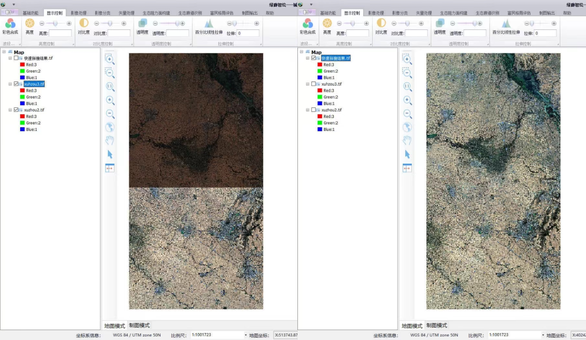
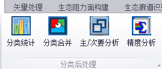
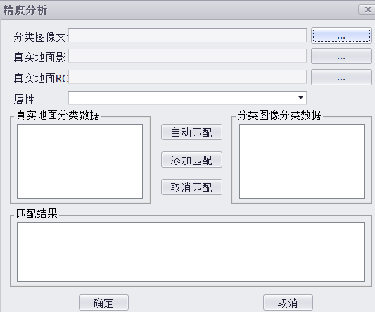
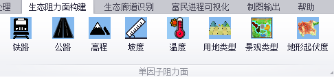
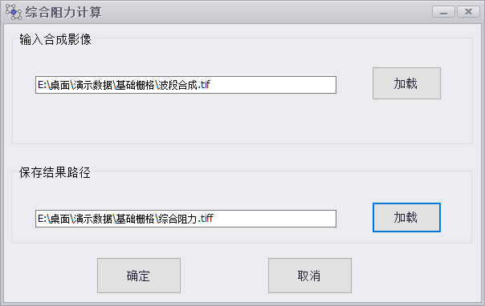
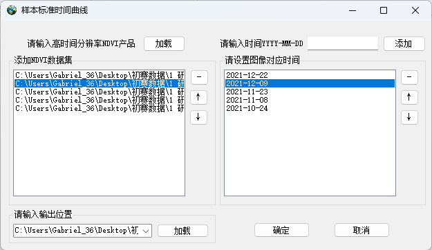
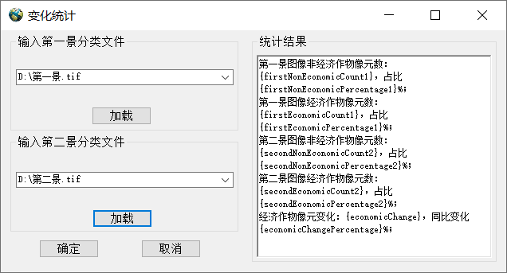
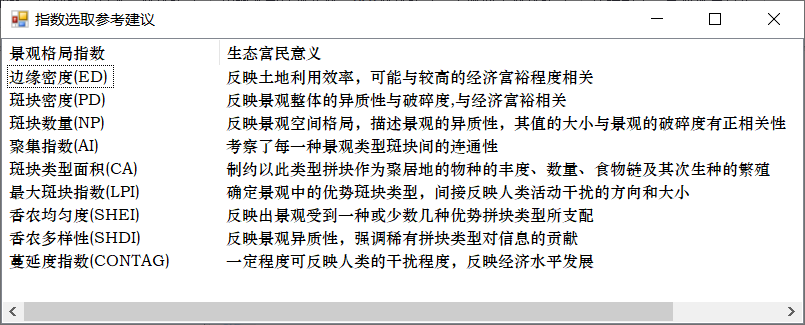

绿廊智绘——城镇生态富民格局智能遥测系统 使用教程
系统介绍
考察资源转型城市现状，其生态环境问题更为严重，不仅需要对资源类型进行重新规划和改变，同时还需要在进行新的建设开发的时候不伤及已经相当脆弱的生态，故明确对生态影响重大的区域极具意义，这可以通过科学调查和评估来确定。根据对区域的生态环境现状和潜在问题的了解，可以大致确定生态廊道的位置和范围。本系统可实现对城镇区域进行生态廊道识别、生态格局构建、富民指标量算，以此来展示城镇区域内潜在生态廊道，使其在之后资源转型和规划新的发展战略时，提供有益参考。 本项目拟以当前主流的生态网络构建理论流程即“源地识别—阻力面构建—廊道识别”作为主体思路，开发一套可以系统化实现城镇内生态廊道快速识别、生态格局构建、富民指标量算的软件，以此来简化生态富民格局构建所需的流程，并且可以将生态网络及其重要分级廊道、核心区进行可视化成图，以便决策者针对城市未来规划下达指令。 该系统能从生态和富民两个维度，深层次分析生态富民基本内涵，构建覆盖全面、科学合理的生态富民水平评价指标体系，能为生态富民相关研究提供参考，提升研究结论的准确性和专业性。
1 基础功能模块
在【地图工程】中，包括新建工程、打开工程、保存工程、另存工程、关闭工程。
点击【新建工程】，弹出新建地图对话框，软件会弹出是否保存当前工程的提示信息，设置地图工程的路径和名称，新建一个空白地图工程；
点击【打开工程】，弹出打开地图工程对话框，选择待打开的地图工程，将选中的工程加载到软件中；
点击【保存工程】，保存当前地图工程的修改或另存当前活动数据框内容为地图工程；
点击【另存工程】，选择工程路径即可保存工程至指定的路径；
点击【关闭工程】会直接结束进程。
在【数据管理】中，包含加载数据、加载矢量数据、加载栅格数据、加载卫星数据、添加底图等功能，添加底图功能中包括多种类地图，如天地图影像底图、天地图影像注记、高德卫星图、高德注记图、ArcGIS Image等底图，供用户选择，简化用户操作。
在图层管理和图层显示中间包含图层的基础显示控制。
系统下方可显示坐标系信息、比例尺、地图坐标和屏幕坐标。
点击【拉框放大】，通过鼠标拖曳划定矩形区域实现地图放大功能；
点击【拉框缩小】，通过鼠标拖曳划定矩形区域实现地图缩小功能；
点击【中心放大】，点击地图进行以点击点为中心、一定比例的放大；
点击【中心缩小】，点击地图进行以点击点为中心、一定比例的缩小；
点击【全图显示】，缩放至地图的全图范围，默认情况下是活动数据框中所有数据的范围；
点击【1:1显示】，软件与影像分辨率比例为1:1时的显示范围；
点击【卷帘】，实现两幅及以上影像的上下切换；
在【信息查询】中点击【探针工具】，可获取影像某一空间位置处对应的所有波段的像素灰度值；
点击【属性查询】，可以查询鼠标点击点或选择面在图层上的属性。
点击【空间查询】，通过鼠标在影像上拉框，选中拉框所选区域。在图层右键打开属性表，可实现图层联动显示。
点击【直方图统计】，分别确定输入数据及其任一波段，点击Apply，可显示该波段不同像素灰度值的统计直方图。
在【格式转换】中点击【矢量转栅格】或【栅格转矢量】可以实现栅格和矢量之间的互换；
点击【存储格式转换】，可以对影像实现BSQ、BIL、BSP三种存储格式的转换。
2 显示控制模块
在【波段合成】中点击【彩色合成】，用户可以自定义波段顺序，例如标准假彩色合成显示影像。
在【亮度控制、对比度控制、透明度控制、拉伸控制】中通过拖动控制条或输入参数，可以实现对应显示参数的控制。
3 影像处理模块
在本模块，可以实现对于原始遥感影像的辐射校正、几何校正、影像匹配、、正射校正、几何精校正、快速拼接、影像裁剪、波段运算、波段合成等操作。
点击【辐射定标】，可将原始辐射数据转换为物理意义明确的辐射度量值。具体操作为：1.输入需要辐射定标的文件；2.输入元数据文件；3.设置定标类型，可选择表观辐射率和表观反射率两种类型；4.设置输出文件路径，点击确定即可执行。
点击【大气校正】，可校正遥感图像中由于大气影响而引起的辐射扰动，以提高图像的定量分析和解译精度。具体步骤为：1.设置输入信息，输入影像文件和其元数据文件，并设置数据类型（包括DN值、表观辐亮度、表观反射率）；2.设置参数，包括大气模式、气溶胶类型、初始能见度等；3.设置输出路径，点击确认即可执行。
点击【影像匹配】，可以在弹出的对话框中进行影像的几何校正。影像匹配的功能是可以在几何上对齐两个图像，即让两幅图像在空间坐标上一致。具体操作为：1.加载辐射定标的文件和基准影像；2.导入DEM数据消除高程带来的误差；3.设置阈值检查误差较大的数据点，将超过阈值的不合格点删除。
点击【正射校正】可以将倾斜或扭曲的遥感影像进行几何校正，使其具有等距投影的特性，从而实现影像的真实比例和直角关系。具体操作为：1.输入影像文件、RPC文件、地面控制点文件；2.设置输出文件、投影，其余均按默认值即可；3.点击确定执行正射校正操作。
点击【几何精校正】，可以对遥感影像进行高精度的几何校正，以确保影像具有准确的位置和尺度信息。具体步骤为：1.获取地面控制点文件；2.建立校正模型，包括多项式纠正、三角网纠正等；3.选择重采样方式，输入分辨率大小、多项式次数；4.点击确定执行几何校正。
点击【快速拼接】，用于整合和处理多幅地理空间图像，从而简化数据分析和可视化的过程。具体操作为：1.输入多幅影像数据；2.选择输出类型，包括原始数据格式、3通道8位输出；3.设置输出路径，点击确定执行快速拼接功能。
点击【影像裁剪】，实现在整幅图像上或大幅影像上按已规划的矢量范围裁剪出用户需要的部分，便于局部分析。具体操作为：1.选择输入的遥感影像；2.导入裁剪区域，须是矢量文件；3.选择输出文件，点击确认执行操作。
点击【波段运算】，此功能是根据输入的波段运算表达式进行遥感影像波段运算的功能，实质上是对每个像素点对应的像素值进行数学运算，运算表达式中的每一个变量可以是同一幅影像中的不同波段，也可以是不同影像中的波段，但要求输入影像的幅宽大小保持一致。具体步骤为：1.输入波段运算表达式，点击加入，公式会显示入已有波段运算表达式中；2.如果输入表达式有误，可将输入的表达式删除，重新输入，然后点击下一步；3.对波段变量进行设置；4.打开需要进行波段运算的文件；5.设置输出文件路径。
点击【波段合成】，此功能可以将来自不同的影像数据进行整合，在此系统中可将八个单因子阻力面合成为综合阻力面。具体步骤为：1.输入多个栅格数据；2.选择输出文件，点击确定执行操作。
4 影像分类模块
点击【ROI工具】，可采用多边形、矩形、椭圆、自己选择的方式绘制感兴趣区。具体步骤为：1.加载待分类影像；2.点击ROI，打开ROI选择器，点击ADD添加所需的分类类别，点击所创建的类别，通过上方Polygon、Rectangle、Ellipse、Select选择每一类合适的分类样本，点击OK即可完成感兴趣区的创建。

点击【ISODATA】，实现非监督分类，用于将数据集分成若干个类别或聚类。具体步骤为：1.选择输入文件；2.选择全部波段；3.设置参数，选择输出文件。
点击【K-Means】，实现非监督分类，用于将数据集分成预定义数量（K个）的类别或聚类。它是一种迭代算法，通过最小化每个数据点与其所属聚类中心之间的平方距离来实现聚类。具体操作为：1.选择输入文件；2.选择全部波段；3.设置参数，选择输出文件。
点击【距离分类】，实现监督分类，基于样本之间的距离来进行分类预测。核心思想是假设样本空间中的相似样本在类别上也具有相似性，将新样本分配给与其最近邻的相同类别。具体步骤为：1.选择待分类影像；2.选择进行分类的波段；3.选择分类器，包括最小距离分类、马氏距离分类；4.选择ROI感兴趣区和输出文件路径。
点击【最大似然分类】，实现监督分类，基于统计学原理，尤其是最大似然估计的思想，假设每个类别的数据分布服从某种已知的概率分布，然后根据样本在各类别下出现的可能性来进行分类。具体操作为：1.输入待分类影像；2.选择进行分类的波段；3.选择ROI；4.自动选择分类器为最大似然分类器，选择输出文件路径。
在【分类后处理】中包括分类统计、分类合并、主次要分析、精度分析功能。
点击【分类统计】可统计出图像里不同类别的像元DN值为这个dn值的点的个数、百分比、面积，输入文件点击开始统计即可看到结果。
点击【分类合并】可将分类文件中所设置的对应类别进行合并。操作步骤为：1.输入需要分类合并的数据；2.选择输入和输出类别，添加对应关系，选择输入文件路径，点击确定执行分类合并操作。
点击【主/次要分析】里的主要分析能评估分类器在整体数据集上的表现，如准确率、精确率等，可以确定最佳的分类阈值，即分类器将样本分为正类和负类的概率界限。次要分析在面对类别不平衡数据时，可以采用各种方法来处理，能通过校正分类器输出的概率值，提高分类器的预测精度。具体操作为：1.输入分类后图像；2.选择类别和分级方法；3.设置参数，选择输出路径，点击确定执行主/次要分析操作。
点击【精度分析】功能可以对处理后的遥感影像进行精度评估和验证，以确保影像具有准确的地理位置和尺度信息。操作步骤为：1.输入分类图像文件；2.输入真实地面影像文件；3.输入真实地面矢量文件；4.对两幅影像选择匹配方式，可以直接使用自动匹配获得结果或者通过添加匹配点来完成匹配，点击确定即可在匹配结果栏输出匹配结果。
点击【重分类】可将栅格图层的数值进行重新分类组织或者重新解释，关键是确定原数据到新数据之间的对应关系。操作步骤为：1.输入待重分类的数据；2.对类别重新赋值，并可以添加条目、删除条目等；3.设置重分类后文件的输出路径，点击确定，执行功能后即可将重分类后的数据输出到指定路径当中。
5 矢量处理模块
包括开始编辑、保存编辑、结束编辑、创建要素、删除要素、移动要素、撤销、恢复、属性编辑、要素合并矢量工具。
6 生态阻力面构建模块
在【MSPA景观分类】中包括环境配置、数据预处理、MSPA景观分类功能。
点击【环境配置】，此功能结合了Guidos形态学空间格局分析软件，在此处实现环境的配置，按照步骤操作即可。
点击【数据预处理】可获取MSPA分类的基础数据，本步通过重分类将土地利用数据转换为二值数据，包括：前景和背景，前景赋值为2，背景赋值为1。在这里将林地、水域作为前景，建筑用地、耕地和其他用地作为背景。操作步骤为：1.输入土地利用类型分类数据;2.选择数据输出类型;3.设置数据输出路径，点击确定，执行二值处理。
点击【MSPA景观分类】调用外部Guidos软件。操作步骤为：1.点击MSPA景观分类按钮，即可运行GuidosToolbox软件；2.【File】-【ReadImage】-【GeoTiff】读取二值数据（注意路径不能包括中文）；3.【GeneralTools】-【Preprocessing】-【Convert】-【Convert->Byte】将图像转换为Byte格式；4.设置参数：FGConn勾选（8邻域）；EdgeWidth设置为2；Transition勾选（On）；Intext勾选（On）；5.【ImageAnalysis】-【Pattern】-【Morphological】-【MSPATilling】执行MSPA景观分类；6.【File】-【SaveImage】-【GeoTiff】将结果保存为栅格图像。在MSPA景观分类窗口中输入栅格图像，其余设置均按默认，设置文件输出路径，得到MSPA景观分类运行结果。
在【DEM数据处理】中可实现DEM转换为坡度和地形起伏度。
点击【坡度处理】调用ArcGIS Engine控件中的坡度功能；
点击【地形起伏度处理】集成了焦点统计和栅格计算器功能。
在【单因子阻力面】中根据生态量算指标，共涉及到八大阻力因子，分别是铁路、公路、高程、坡度、温度、用地类型、景观类型、地形起伏度，设计功能方面针对两方面：线状要素和面状要素。
点击【铁路】或【公路】，线状要素集成了ArcGIS-Engine二次开发包的多环缓冲区、矢量转栅格、图像裁剪、重分类算法用来处理线元素。操作步骤为1.输入铁路或公路矢量数据；2.输入裁剪范围的shp文件；3.设置像元大小、文件输出类型和文件输出路径，点击确定可得到铁路和公路阻力因子图。

点击【高程】、【坡度】、【温度】、【用地类型】、【景观类型】、【地形起伏度】，面状要素采用了ArcGIS-Engine二次开发包的重分类功能。操作步骤为1.输入栅格数据；2.选择数据输出类型，阻力值按照默认即可；3.设置数据输出路径，点击确定即可得到六类面状阻力因子。

点击【综合阻力】，此功能用于加权计算各个单阻力因子，以求得综合阻力。此步骤需要先进行波段合成，再进行波段运算。操作步骤为：1.加载各个单因子阻力数据；2.调整波段顺序（依次为铁路、公路、用地类型、坡度、MSPA、高程、温度、地形起伏度）；3.设置波段合成数据输出路径，点击确定执行波段合成；4.输入波段合成的影像；5.设置综合阻力输出路径，点击确定，执行综合阻力计算。
7 生态廊道识别模块
在【核心区】中包括核心区重要性、核心区提取、核心区划分功能。
点击【核心区重要性】，此功能调用了Conefer2.6版本的外部软件，用来评估核心区的重要性。
点击【核心区提取】，可将得到的基于MSPA方法分类的栅格影像中核心区部分提取出来。具体操作为：1.输入MSPA分类影像；2.设置文件输出路径，点击确认即可执行操作。
点击【核心区划分】，此功能是将提取出来的核心区矢量文件进行分级处理，得到不同分级结果的功能。具体操作为：1.输入核心区提取中得到的文件；2.设置输出路径，点击确认即可执行操作。
在【生态廊道识别】中包括成本距离计算、成本路径计算、采样、廊道添加字段、廊道分级功能。
点击【成本距离计算】，此功能是根据输入的源地和阻力栅格，输出成本栅格和回溯链接数据。操作步骤如下：1.输入源地矢量数据；2.输入阻力栅格；3.设置成本距离栅格输出路径；4.设置回溯链接输出路径，点击确定即可把数据输出到本地。

点击【成本路径计算】，此功能根据成本栅格数据与目的地点矢量数据输出成本路径栅格数据，也就是未分级的廊道数据。操作步骤为：1.输入目标点矢量数据；2.输入成本距离栅格数据；3.输入同一幅图的回溯链接数据；4.设置输出路径，点击确定可以将数据输出到已设置的路径位置。
点击【采样】，此功能是为廊道分级提供数据的功能，它将对输入的成本距离栅格数据和目的地点矢量数据进行采样，输出一个dbf表格。操作过程为：1.输入成本距离栅格数据；2.输入需要采样的点（目的地点）数据；3.设置输出表的路径。
点击【廊道添加字段】，此功能为根据采样获得的表格转为.xls格式后的表格来对廊道进行级别赋值。
点击【廊道分级】，此功能是根据上一个功能所赋值的字段对廊道矢量数据进行分级渲染的功能，选中需要分级的廊道数据，使其成为活跃状态，点击廊道分级按钮即可完成分级。
8 富民进程可视化模块
在【生态农业】中包括样本标准时序曲线、农业结构分类、变化统计功能。

点击【样本标准时序曲线】，该功能是在用户未知区域各类作物NDVI标准时序曲线的情景下，通过用户输入的高时间分辨率的NDVI产品与作物分类样本，绘制各类作物的NDVI标准时序曲线，为用户判定作物分类窗口期提供依据。操作过程为：1.添加作物分类样本数据；2.添加高时间分辨率的遥感数据NDVI产品集；3.设置每张NDVI产品对应时间；4.设置输出位置。
点击【农业结构分类】，该功能是让用户根据经济作物、一般作物种植结构分类栅格数据得到经济作物和一般作物的二值化图像。操作过程为：1.输入栅格数据；2.设置经济作物值为1，一般作物值为0，其它部分设为NoData；3.确定栅格输出路径。
点击【变化统计】，该功能是根据用户输入的不同年份的经济作物、一般作物二值化分类图像，得到影像中经济作物和一般作物的像元数和占比，并计算经济作物的像元变化和同比变化。操作过程为：1.输入第一景分类数据；2.输入第二景分类数据；3.确定即可出现统计结果。
在【城镇要素变化分析】中包括用地类型转移矩阵、POI变化统计、道路要素变化统计功能。
点击【用地类型转移矩阵】，该功能是根据用户输入的前后两景用地类型分类遥感影像，计算用地类型转移矩阵，并将统计结果存储在一个表格当中。操作过程为：1.添加第一景用地类型分类遥感影像；2.添加第二景用地类型分类遥感影像；3.选择表格输出位置。
点击【POI变化统计】，该功能是根据用户输入的不同时期的POI数据，分析POI数量变化，一定程度上可视化富民进程。同时窗体设置两个地图控件可供用户直接对比前后变化。
点击【道路要素变化统计】，该功能是根据用户输入的不同时期的道路要素数据，分析道路要素长度变化，一定程度上可视化富民进程。同时窗体设置两个地图控件可供用户直接对比前后变化。
在【景观格局分析】中包括环境配置、景观格局分析功能。
点击【环境配置】，出现Fragstats4.2软件安装界面弹窗，按照默认配置安装软件。
点击【景观格局分析】，出现指数选取参考建议同时调用Fragstats4.2软件。该软件是计算景观格局定量分析的有利工具，进入软件，点击【new】新建一个项目，点击【Add layer】加载土地利用类型分类图，在右侧勾选要计算的指数，左下角加载Class descriptors文件（包括id，name，enabled，isbackground四个属性）、Edge depth文件（包括类别和矩阵），点击【Run】即可运行计算景观格局指数。
9 制图输出模块
在本模块中，将视窗转换到制图模式后，可以实现遥感影像的专题制图操作，包括放大缩小等操作以及添加指北针、比例尺、图例或者文本等制图相关元素，进行地图整饰，最后可以输出地图。